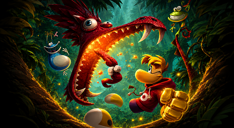
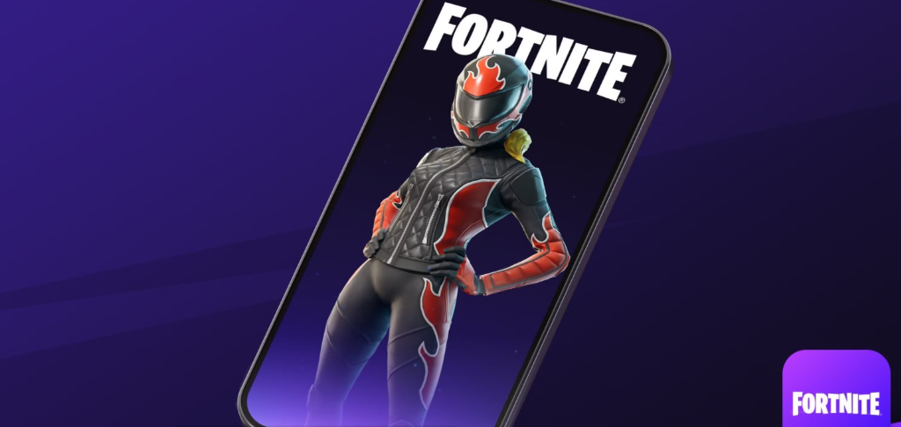
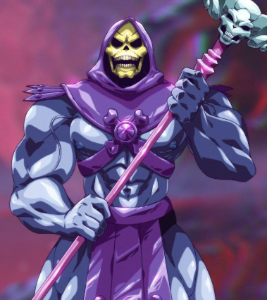
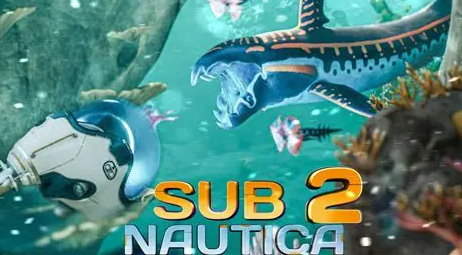

Trending Topic and Latest News
Pokemon
The Pokémon franchise is experiencing a surge of new titles and spin-off games, with a detailed roadmap outlining the next half a decade for fans. The 30th anniversary is set to bring a host of new releases.
Rayman Legends
Ubisoft has confirmed that it's remaking arguably the best game in the Rayman franchise, and it will release later this year. During the recent PlayStation State of Play, Ubisoft gave fans the first look at Rayman Legends Retold, including gameplay that showcased the game's updated visuals and performance. Although the classic Ubisoft platformer series has been dormant for some time, Rayman is finally back with Rayman Legends Retold.


Console games and news
SONY PS5 UPDATE
Sony has released a new firmware update for PS5 consoles, but don’t expect Version: 26.04-13.40.00 to introduce any sweeping changes to the console. Instead, this is one of the usual PlayStation updates focused on system stability, and the very brief patch notes hammer this point home.
EA is Shutting down a Game?
EA keeps a running list of games it is shutting down and has shut down in the past. As far as 2026 goes, EA has shut down a variety of its games, including a couple of titles from beloved developer BioWare. Anthem was shut down at the beginning of the year, and more recently, the PS3 version of Dragon Age: Inquisition ceased operations.The next EA shutdown is right around the corner, and it will likely disappoint fans of the Battlefield franchise on consoles.
Mobile game and news
FORTNITE ON MOBLIE
Fortnite is available on mobile devices through the Epic Games Store and the Play Store for Android and the App Store for iOS. You can download it for free and enjoy various game modes, including Battle Royale, Zero Build, and LEGO Fortnite.
Mattel Digital Studios has announced the launch of its first self-published casual endless runner title, Skeletor: Until Next Time
So, Skeletor: Until Next Time is a fast-paced, endless runner inspired by the iconic Masters of the Universe, bringing the famous meme to life. Here, you play as the beloved Skeletor as he races through Snake Mountain across He-Man’s Eternia, dodging traps, avoiding obstacles, and testing your reflexes and timing each run. I’m sure it’ll be super fun for quick sessions.


PC Games and news
Subnautica 2 WEIRD MECHANIC
Subnautica 2 design lead Anthony Gallegos has opened up about the reaction to Unknown Worlds’ decision to prevent players from killing predators in the underwater survival game, explaining the developers’ true intent.Not being able to kill fish in Subnautica 2 is the game’s hottest topic, and while Unknown Worlds has promised to add “mitigation” to the game so you can better deal with predators, it will never allow you to kill them.
CS2 Is Free SO Why Not Play
- Valve's hugely anticipated CS:GO sequel released to the wider public in October, shedding the cost-of-entry associated with its predecessor. Yep, the skill ceiling is going to be pretty high here—it's one of the biggest competitive FPSs in the world—but if you want to dive in, well, it's free.


| Game Name | Rating | Summary | Amount of Players | Images |
|---|---|---|---|---|
| Pokemon | 7.6⭐ | The mainline Pokémon series is centered around players taking the role of a Pokémon Trainer. The fundamental mechanics revolve around capturing Pokémon, which each have unique species, types(like Fire, Water, Grass),abilities, and stats. Players train these Pokémon through battles against wild Pokémon or other trainers to increase levels and evolve them into stronger forms. | 1.6 Billion+ Players | |
| Rayman Legends | 8.3⭐ | Rayman Legends is a highly stylized platforming adventure in which players control Rayman, Globox, and a cast of whimsical characters to navigate imaginative worlds. The central gameplay involves running, jumping, and combat across visually diverse levels filled with obstacles, enemies, and collectible items called Lums. | 37 Million+ Players | |
| Scubanuatic 2 | 6.7⭐ | Subnautica 2 likely continues the canon set by Subnautica, involving an alien oceanic planet with a mysterious fauna and biotech ecosystem. Players uncover lore via environmental clues, data logs, and interactive events, blending exploration with emergent narrative experiences. | 500 thousand+ Players | |
| Counter Strike 2 | 9.5⭐ | Counter-Strike 2 is largely gameplay-centric; the story is implicit—terrorist attacks versus counter-terrorist interventions. The focus is on situational tactics rather than a narrative plot, allowing emergent storytelling through player interactions. | 210 million+ Players | |